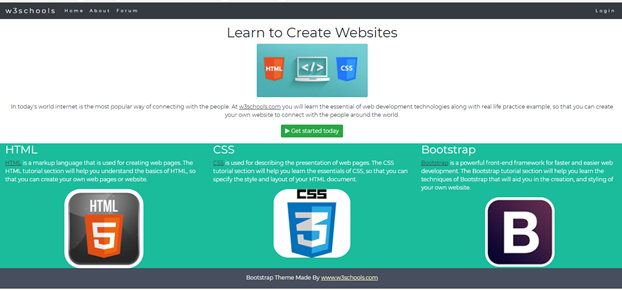

This lab looks at Navbars and how to implement them.
The Bootstrap 4 navbar is a simple wrapper for positioning branding, navigation, and other elements into a navigation header.
The following is an example of a basic navbar.
<nav class="navbar navbar-expand-sm navbar-light bg-light">
<!-- Brand -->
<a href="#" class="navbar-brand">w3resource</a>
<!-- Responsive Toggle menu -->
<button class="navbar-toggler" type="button" data-toggle="collapse" data-target="#nav-content" aria-controls="nav-content"
aria-expanded="false" aria-label="Toggle navigation">
<span class="navbar-toggler-icon"></span>
</button>
<!-- Links -->
<div class="collapse navbar-collapse" id="nav-content">
<ul class="navbar-nav">
<li class="nav-item"><a class="nav-link" href="#">About</a></li>
<li class="nav-item"><a class="nav-link" href="#">Portfolio</a></li>
<li class="nav-item"><a class="nav-link" href="#">Contact</a></li>
</ul>
</div>
</nav>Here's an explanation:
The navigation bar often takes up too much space on a small screen.
We should hide the navigation bar; and only show it when it is needed as in the code excerpt:
<button class="navbar-toggler" type="button" data-toggle="collapse" data-target="#nav-content" aria-controls="nav-content"
aria-expanded="false" aria-label="Toggle navigation">
<span class="navbar-toggler-icon"></span>
</button>
<div class="collapse navbar-collapse" id="nav-content">
<ul class="navbar-nav">
<li class="nav-item"><a class="nav-link" href="#">About</a></li>
<li class="nav-item"><a class="nav-link" href="#">Portfolio</a></li>
<li class="nav-item"><a class="nav-link" href="#">Contact</a></li>
</ul>
</div>The navbar-collapse class displays the hamburger when the width of the screen becomes small. The above section of the code makes clicking the hamburger button display the links stacked over each other when the screen width becomes small.
You can add dropdown menus to your navbar. Just add the dropdown code to a <li> element with the .dropdown class applied as in the following example.
...
<li class="nav-item dropdown">
<a class="nav-link dropdown-toggle" data-toggle="dropdown" id="Preview" href="#" role="button" aria-haspopup="true"
aria-expanded="false">
Products
</a>
<div class="dropdown-menu" aria-labelledby="Preview">
<a class="dropdown-item" href="#">Product 1</a>
<a class="dropdown-item" href="#">Product 2</a>
<a class="dropdown-item" href="#">Product 3</a>
</div>
</li>
...Use the .active class to mark a link as the current page or section (apply it to the <li> element).
Also add a span with .sr-only to communicate this to screen readers as in the following example.
...
<ul class="navbar-nav">
<li class="nav-item"><a class="nav-link" href="#">About</a></li>
<li class="nav-item"><a class="nav-link" href="#">Portfolio</a></li>
<li class="nav-item active"><a class="nav-link" href="#">Contact</a></li>
...You can use any of the spacing utilities (such as mr-auto) or any of the flexbox alignment utilities (such as .justify-content-end) to align elements within the navbar as in the following example.
...
<div class="collapse navbar-collapse justify-content-end" id="nav-content">
<ul class="navbar-nav">
...
</ul>
</div>
...You can also use mr-auto or ml-auto to align list items as in the following example.
<div class="collapse navbar-collapse" id="nav-content">
<ul class="navbar-nav">
<li class="nav-item"><a class="nav-link" href="#">About</a></li>
<li class="nav-item"><a class="nav-link" href="#">Portfolio</a></li>
<li class="nav-item active"><a class="nav-link" href="#">Contact</a></li>
<li class="nav-item dropdown">
<a class="nav-link dropdown-toggle" data-toggle="dropdown" id="Preview" href="#" role="button" aria-haspopup="true"
aria-expanded="false">
Products
</a>
<div class="dropdown-menu" aria-labelledby="Preview">
<a class="dropdown-item" href="#">Product 1</a>
<a class="dropdown-item" href="#">Product 2</a>
<a class="dropdown-item" href="#">Product 3</a>
</div>
</li>
</ul>
<ul class="navbar-nav ml-auto">
<li class="nav-item"><a class="nav-link" href="#">Login</a></li>
</ul>
</div>Bootstrap provides various options for adding colour to navbars. The way it works is, you specify light or dark (via .navbar-light or .navbar-dark), then specify a colour. Colour can be specified either via one of Bootstrap's colour classes (eg, bg-light, .bg-primary, .bg-dark), or by specifying your own colour with CSS (eg, using background-color).
The previous examples already specify the navbar colour. Here are some more examples.
Here, we use .bg-primary along with .navbar-light as in the following example.
<nav class="navbar navbar-expand-md navbar-light bg-primary">
...
</nav>Here, we use .bg-primary along with .navbar-dark as in the following example.
<nav class="navbar navbar-expand-md navbar-dark bg-primary">
...
</nav>In the following example, we use .bg-dark along with .navbar-dark.
To specify your own custom colour, omit any .bg-* class (eg, remove .bg-primary) and add your own colour using CSS as in the following example.
<nav class="navbar navbar-expand-md navbar-dark" style="background: coral;">
...
</nav>In the following example, we see the WIT website again with a Navbar. The example makes use of the active class, is responsive, has a brand, and uses dark colours.
You can fix a navbar to the top or bottom of the viewport by using either .fixed-top or .fixed-bottom.
The following example illustrates the navbar fixed to the top of the page.
<nav class="navbar fixed-top navbar-expand-md navbar-dark bg-dark">
...
</nav>The following example illustrates the navbar fixed to the bottom of the page.
<nav class="navbar fixed-bottom navbar-expand-md navbar-dark bg-dark">
...
</nav>When using fixed navbars, you will usually need to add padding to compensate for the height of the navbar (otherwise the navbar will hide your content) as can be seen in the following example .
For example, for a "fixed top" navbar, try this:
body { padding-top: 70px;
}And for "fixed bottom":
body { padding-bottom: 70px;
}You can adjust these values as required.
A web page has been created for you, add Bootstrap 4 classes that will:
Personalise your Theme by adding a font that you like. We will use "Montserrat" from Google's Font Library.
Link to the font in the <head> section:
<link href="http://fonts.googleapis.com/css?family=Montserrat" rel="stylesheet">Then you can use it in the page by modifying the <body> style as follows:
body {
font-family: Montserrat, sans-serif;
line-height: 1.5;
}You can find out more at: Get Started with the Google Fonts API
Here, we will add an icon to the search button:
<link href="https://maxcdn.bootstrapcdn.com/font-awesome/4.5.0/css/font-awesome.min.css" rel="stylesheet">Add the following to the link (Get Started Today) before the label:
<span class="fa fa-play"></span>You can find out more at: Font Awesome
